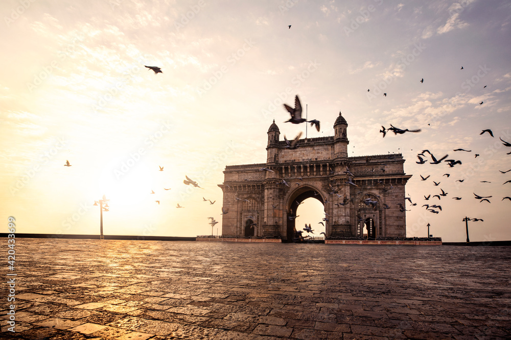
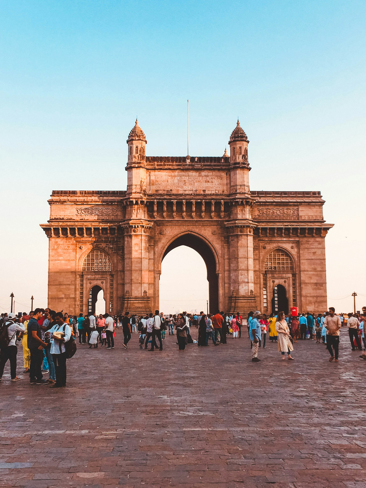
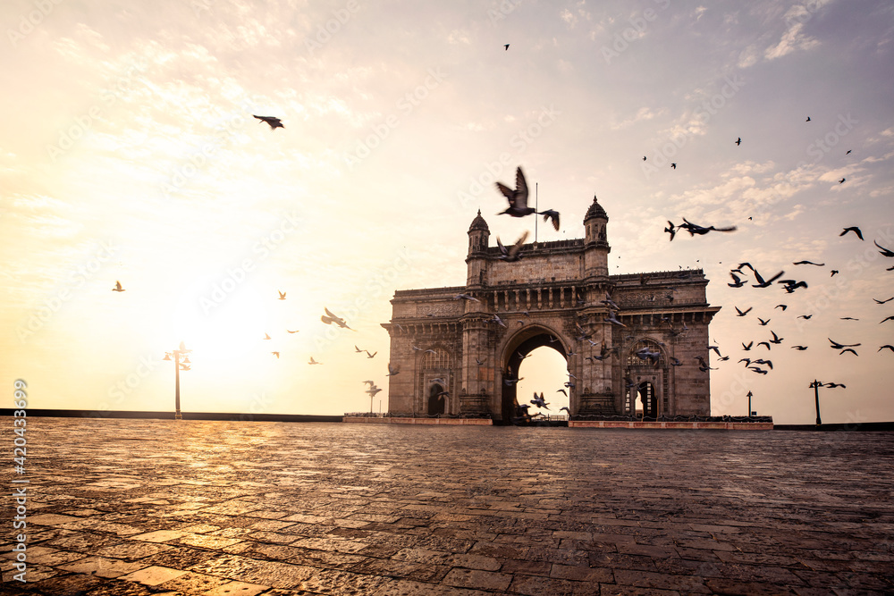
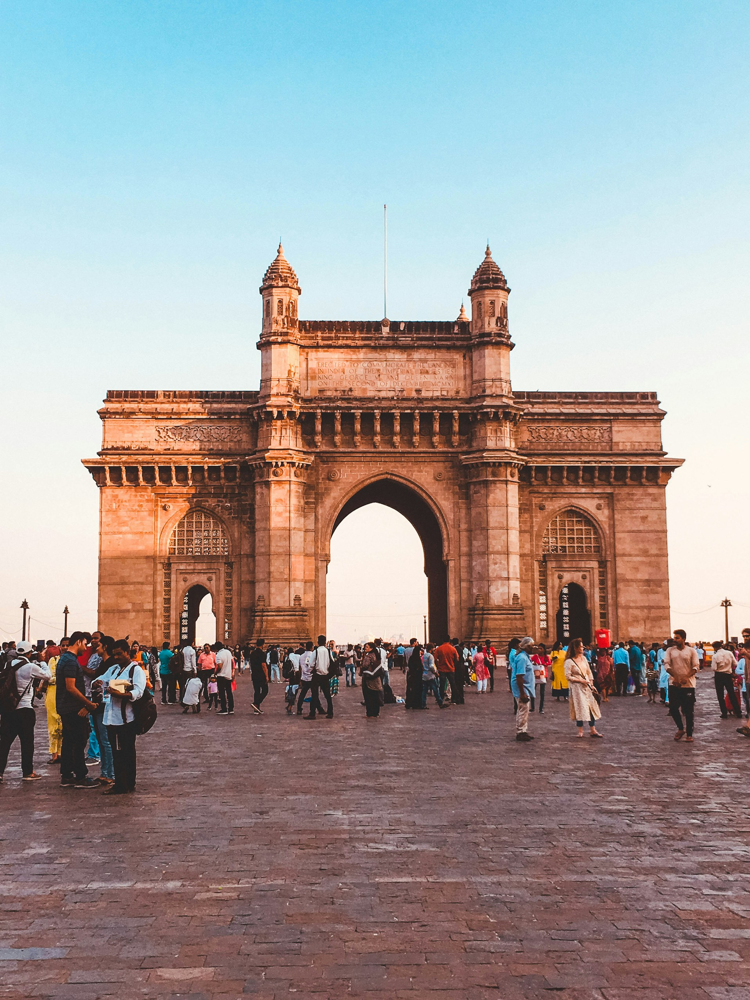

Mumbai
Gateway of India
 



1. Location: The Gateway of India is situated at the waterfront in South Mumbai, overlooking the Arabian Sea.
2. Architectural Style: The monument is built in the Indo-Saracenic architectural style, which combines elements of Indian, Islamic, and British architecture.
3. Construction: The Gateway of India was constructed to commemorate the landing of King George V and Queen Mary in Mumbai in 1911. The foundation stone was laid in 1911, and the monument was completed in 1924. It was designed by the British architect George Wittet.
4. Design: The structure of the Gateway of India consists of a large arch made of yellow basalt stone, with intricate carvings and decorations. It stands at a height of 26 meters (85 feet).
5. Symbolism: The Gateway of India is not only a historical landmark but also serves as a symbol of India's rich colonial history. It was the ceremonial entrance to India for British governors and viceroys during the British Raj.
6. Tourist Attraction: Today, the Gateway of India is one of Mumbai's most popular tourist attractions. It attracts visitors from around the world who come to admire its architecture, take photographs, and enjoy the panoramic views of the Arabian Sea.
7. Surroundings: The monument is surrounded by the bustling city of Mumbai and is situated near other prominent landmarks such as the Taj Mahal Palace Hotel and the Elephanta Caves.
8. Activities: Visitors can take boat rides from the Gateway of India to explore nearby attractions such as Elephanta Island and enjoy views of the Mumbai skyline from the sea.
Overall: The Gateway of India is not only a historical monument but also a symbol of Mumbai's identity and a must-visit destination for tourists exploring the city.
Marine Drive


1. Location: Marine Drive is a famous seaside promenade located in South Mumbai, Maharashtra, India. It stretches along the Arabian Sea coast, forming a 3.6-kilometer arc from Nariman Point to Girgaum Chowpatty.
2. Description: Marine Drive is often referred to as the Queen's Necklace due to its curved shape when viewed from above, resembling a necklace illuminated by streetlights at night. The promenade is lined with palm trees and features a broad walkway where people can stroll, jog, or relax while enjoying the sea breeze.
3. History: Marine Drive was constructed in the 1920s and 1930s as part of the reclamation project to connect Nariman Point to Malabar Hill. It has since become an iconic landmark of Mumbai, attracting both locals and tourists alike.
4. Attractions: Along Marine Drive, visitors can enjoy breathtaking views of the Arabian Sea, especially during sunset when the sky turns into vibrant hues of orange and pink. The promenade is also dotted with art deco buildings, luxury hotels, and restaurants offering a variety of cuisines.
5. Recreational Activities: Marine Drive offers opportunities for various recreational activities such as jogging, walking, cycling, and even kite flying. Many people visit the promenade to unwind after a busy day or to socialize with friends and family.
6. Landmarks: Some notable landmarks near Marine Drive include the Taraporewala Aquarium, the Charni Road railway station, and the Wilson College. Additionally, the iconic Oberoi Trident hotel and the famous Chhatrapati Shivaji Maharaj Marg (formerly known as Marine Drive) are located nearby.
7. Events: Marine Drive serves as a venue for various events and celebrations throughout the year, including cultural festivals, marathons, and New Year's Eve gatherings. The promenade comes alive with lights and festivities during these occasions, attracting thousands of people.
Overall: Marine Drive is not only a picturesque promenade but also a symbol of Mumbai's spirit and resilience. It embodies the city's vibrant atmosphere and cosmopolitan culture, making it a must-visit destination for both locals and tourists.
Elephanta Caves


1. Location: The Elephanta Caves are located on Elephanta Island, also known as Gharapuri Island, in Mumbai Harbour, Maharashtra, India. The island is situated about 11 kilometers (7 miles) east of the city of Mumbai.
2. Description: The Elephanta Caves are a UNESCO World Heritage Site and consist of a collection of rock-cut cave temples dedicated to the Hindu god Shiva. The caves are renowned for their intricate sculptures, artwork, and architectural beauty, showcasing ancient Indian craftsmanship and religious symbolism.
3. History: The Elephanta Caves date back to the 5th to 8th centuries CE and were created during the rule of various dynasties, including the Chalukyas, Rashtrakutas, and Kalachuris. The caves served as a place of worship and pilgrimage for Hindus, Buddhists, and Jains over the centuries.
4. Architecture: The main cave, also known as the Great Cave or Cave 1, is the largest and most elaborate of the Elephanta Caves. It features a grand entrance with a colossal statue of Shiva in his three-headed form as Trimurti, along with various other sculptures depicting scenes from Hindu mythology.
5. Sculptures: The Elephanta Caves are famous for their exquisite sculptures, including depictions of Shiva in different forms such as Nataraja (the cosmic dancer), Ardhanarishvara (the androgynous deity), and Yogishvara (the lord of yoga). Other notable sculptures include those of goddess Parvati, Ganesha, and Kartikeya.
6. Access: Visitors to Elephanta Island can reach the Elephanta Caves by taking a ferry from the Gateway of India in Mumbai. The journey takes approximately one hour, and visitors can explore the caves and learn about their history and significance with the help of local guides.
7. Preservation: Efforts have been made to preserve and protect the Elephanta Caves, including conservation projects and initiatives to raise awareness about their cultural and historical importance. The site continues to attract tourists and scholars interested in India's rich heritage and artistic traditions.
Overall: The Elephanta Caves are not only a testament to India's ancient civilization and religious heritage but also a fascinating archaeological site and tourist destination. They offer visitors a glimpse into the artistic and spiritual achievements of the past and continue to inspire awe and admiration to this day.
Chhatrapati Shivaji Maharaj Terminus


1. Location: Chhatrapati Shivaji Maharaj Terminus (CSMT), formerly known as Victoria Terminus (VT), is a historic railway station located in Mumbai, Maharashtra, India. It is situated in the Fort area of South Mumbai.
2. Description: CSMT is a UNESCO World Heritage Site and one of the busiest railway stations in India. It serves as the headquarters of the Central Railway zone of the Indian Railways and is an iconic symbol of Mumbai's architectural heritage.
3. History: The construction of CSMT began in 1878 and was completed in 1887 to commemorate the Golden Jubilee of Queen Victoria. The station was designed by the British architect Frederick William Stevens in the Victorian Gothic Revival style, featuring intricate carvings, stained glass windows, and ornamental details.
4. Architecture: CSMT is renowned for its grand architectural design, characterized by its blend of Victorian, Gothic, and Indian architectural elements. The station's façade is adorned with turrets, spires, and domes, while the interior features vaulted ceilings, decorative arches, and elaborate motifs.
5. Symbolism: CSMT is not only a transportation hub but also a symbol of Mumbai's rich cultural heritage and industrial growth. It represents the city's colonial legacy and serves as a landmark that reflects its bustling urban life and cosmopolitan character.
6. Services: CSMT is a major railway terminus connecting Mumbai with various destinations across India. It offers a wide range of passenger amenities, including ticket counters, waiting halls, food stalls, and railway offices. The station also serves as a terminus for several suburban train services.
7. Preservation: Efforts have been made to preserve and maintain the architectural integrity of CSMT, including restoration projects and conservation initiatives. The station continues to attract tourists, photographers, and history enthusiasts who admire its beauty and historical significance.
Overall: Chhatrapati Shivaji Maharaj Terminus is not just a railway station but a cultural landmark that reflects Mumbai's past, present, and future. It stands as a testament to the city's resilience, diversity, and spirit of progress, inspiring admiration and awe among all who visit.